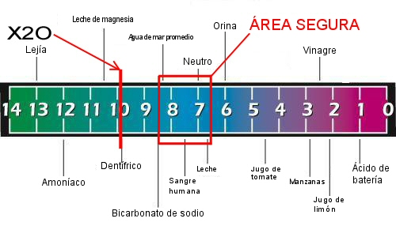

Bueno, otro sitio de “agua especial” ha llamado nuestra atención, esta vez ofreciendo una aún más tonta versión de H2O que se supone produce un tú más sano, más completo. Un hombre llamado Vance Alford en Carolina del Norte esta traficando con un producto llamado “Extreme X2O” hecho por Xooma Worldwide (Eso se lee “Equis Dos O” no “Equis Veinte”. Un juego de palabras de H2O ¿vieron?) Vance nos revela que mientras muchas de las aguas embotelladas que podemos comprar tienen tan pocos como dos electrolitos, ¡Su X2O tiene 74! de seguro, eso hace su agua más valiosa, ¿cierto?
Pero veamos un poco de la salvaje selección de elementos químicos que Vance enlista como componentes de su maravilloso producto:
Observen, por favor, que se refiere al Cloro y al Flúor como Cloruro y Fluoruro, pues de seguro estaba ausente de la escuela cuando tan sutil diferencia fue enseñada. También, los más prominentes elementos en este producto -Hidrogeno y Oxigeno- no están incluidos, quizás por que Vance no pudo deducir como ofrecer diferentes variedades de estos productos a sus consumidores. Lo que inmediatamente me noquea de esta lista, es que parece que ha seleccionado secciones en bloque de la tabla de los 107 elementos disponibles; por ejemplo, solo tomó un grupo completo consecutivo alfabéticamente desde Renio hasta Tantalio. Ahora, de cómo obtiene algunos de estos artículos raros, solo podemos conjeturar, y conjeturo que solo fantasea que tiene acceso a ellos. Lutecio es uno de los elementos más “raros” en el grupo de “tierras raras”. El elemento Renio es extremadamente escaso, como lo son el Erbio, el Europio, el Holmio, el Lantano, el Praseodimio y el Iterbio, todos conocidos como metales de “tierras raras”, algunos de ellos encontrados ocasionalmente solo como subproductos de la fisión nuclear. Ambos, Cadmio y Talio son extremadamente venenosos, aunque ciertamente no como elementos trazas como en el agua de Vance, cuya dilución debe ser de grado homeopático, y de esa forma -como sabemos- totalmente inútiles. Esta agua mágica con la mayor certeza no contiene la mayoría de estos elementos en ninguna cantidad detectable, esto es imaginación, una mentira descarada y/o una farsa.
El 12 de Noviembre recibí este correo basura del señor Alford:
¿Sabias que hay un secreto muy poco conocido acerca del agua que ha existido por cientos de años? Muy pocos saben de esto.
-Los japoneses lo saben.
-Científicos y médicos no tradicionales lo saben.
-Un laboratorio aprobado por la NASA lo validó.
-Los poderosos que controlan a los mercados farmacéuticos lo saben.
Cuando se adentra uno más en esta literatura, Vance orgullosamente establece que su producto fue examinado en el centro de investigaciones de Langley de la NASA, lo que me desconcierta por completo. Este complejo fue construido en 1917 como el primer laboratorio de aeronáutica civil en el país, y ha contribuido a las ciencias aeroespaciales, atmosféricas y a otras tecnologías, pero tiene cero conexiones con investigaciones del agua. He hecho consultas a ambos, al señor Alford y a la NASA en Langley respecto de esto: Reportaré los resultados aquí, muy pronto. Hasta ahora, Vance me ha respondido que los datos
Están en mi sitio de soporte. Le enviaré el vínculo o un pdf a usted. Pero por lo pronto tengo que salir corriendo a una reunión familiar.

El promocional de Vance nos dice que el pH de esta agua maravillosa suya es importante, pero sigan leyendo para obtener el cuadro completo. Explico: la escala química del pH va de 0 (extremadamente ácida) a 14 (extremadamente alcalino) siendo 7.0 exactamente neutral. Un punto abajo en la escala del pH significa que es 10 veces más ácido, por ejemplo, 6 es 10 veces más ácido que 7, una caída de 7 a 5 es 100 veces más grande y de 7 a 2 es 100,000 veces más ácido. Vance está en contra de que el agua de consumo de la gente esté dentro del rango ácido, pero la Organización Mundial de la Salud (OMS) recomienda para seguridad óptima un pH entre 6.5 y 8.5 -vean el rango en la carta- . Menos que 6.5, y más que 9.2, dice la OMS, es considerado peligroso. La Extreme X2O, dice Vance, tiene un pH de ¡9.9! Ya se imaginarán porqué me tiene tan perplejo esta afirmación.
Ah, nos dice Vance, pero no cualquiera puede medir el rango pH del agua, lo que es nuevo para mí. Dice este “experto”:
Para medir apropiadamente el pH verdadero de la Xooma X2O es necesario el equipo electrónico específico diseñado para medir el número de electrones de Hidrgeno (sic) en el agua
Uff, ese sería un número ENORME Vance, y más bien nos indica el pobre entendimiento que tienes de la química y física sencilla. Tomado directo de su video promocional:
Probado en el centro de investigaciones de la NASA en Langley, X2O fue el único producto de su categoría en mostrar una lectura negativa en el medidor de ORP (potencial de reducción de Oxidación, por sus siglas en inglés). ¿Que significa esta cháchara científica para usted? Simple, que X2O no es ácido, y está mucho más disponible para las células de su organismo, así que cuando toma un trago, sus células también toman un trago, y de hecho usted está, por fin, satisfaciendo la sed de su cuerpo.
Esto es ridículo. Nosotros SOMOS las células de nuestro cuerpo, y el agua no solo corre a través de nosotros sin que se distribuya a las partes que lo necesitan, o simplemente nos secaríamos y moriríamos en unas pocas horas.
Ahora hay otro giro en esta estafa, un nuevo producto que se dice fue desarrollado por un miembro del salón de la fama Canadiense de la nutrición deportiva, lo que sea y quien sea que eso signifique. Una breve visita a su sitio nos demuestra que la organización apoya cualquier tipo de curanderismo y nociones crédulas de nutrición. Este nuevo producto es el “Extreme X2O Blast”, un saquito que cuando se zambulle en un poco de agua X2O, la convierte en alguna clase de té, ¡pero en ninguna parte figura la lista de los ingredientes del saquito! Dos sitios interesantes se supone que enlistan estos ingredientes, ahora están cerrados, pero encontramos una fuente. Los ingredientes son:
Calcio “altamente activo”
94.7%
Magnesio
3.4%
Trazas de minerales oceánicos
1.4%
Ácido L-Ascórbico
0.5%
Plata
(Trazas)
El “Calcio” es la vieja estafa del “Calcio de Coral” el cual no es más activo que la tiza regular. De hecho, es sólo tiza, Carbonato de Calcio, y es casi tan barato como el polvo. No se nos explica en qué forma el Magnesio se presenta, pero probablemente esté en forma de Magnesia, MgO, un común -y muy barato- antiácido. Los “minerales trazas” jamás son nombrados, y el ácido ascórbico es vitamina C ¡medio punto porcentual del contenido del saquito de té!
¡Y aquí estaba yo esperando un gran avance científico! Les pregunto, ¿beberían un té hecho de una bolsa de esto? pienso que yo no…
El lector Canadiense Daniel Rioux nos presenta esta traducción de una reciente pieza de noticias muy bienvenidas de su país:
La agencia oficial de farmacéuticos de Quebec se está preparando para prohibir a los naturopatas y homeópatas dar consejería a los pacientes en las farmacias. Radio-Canadá anunció que un nuevo código de ética, en preparación en estos momentos, pondrá un punto final a la presencia de estos profesionales en las inmediaciones de las farmacias. Más y más consejeros de “productos naturales” ofrecen sus consultas en los mostradores de las farmacias, los cuales están usualmente reservados para los farmacólogos.
La agencia farmacéutica tiene dudas acerca de la preparación y competencia de cerca del 80% de los naturopatas, una aserción corroborada por Roseline Gagnon, de la asociación de naturopatas graduados de Quebec.
El nuevo código debe ser aceptado primero por la oficina de profesiones antes de entrar en vigor. Cuando dicho código haya sido firmado, los naturopatas y homeópatas que quieran compartir sus conocimientos, deberán permanecer en los departamentos de dulces y cosméticos.
Dice Daniel, “Desde luego, quiero que los saquen por completo, pero bueno, al menos es un comienzo.”
Una nota de Tim Minogue, un editor de la revista de UK “Private Eye” nos brinda un esperado reporte:
Hola, recordará un artículo de la revista Private Eye de Agosto, donde se menciona que el estado (Parlamento) de Jersey había pospuesto la promulgación de medidas para la conservación del agua en la isla porque un aguador divino clamaba que hay suministros ilimitados de agua fresca bajo tierra, fluyendo desde unas 20 millas más allá del mar de Francia. Los estados comisionaron a varios geólogos que abrieran pozos en dos locaciones especificadas por el zahorí para probar sus declaraciones, a un costo de 70,000 libras (unos $132,000 dólares). Ahora tenemos los resultados, y -sorpresa sorpresa- ¡no existen corrientes subterráneas! La pequeña cantidad de agua extraída fue examinada químicamente y se encontró que era idéntica a otras fuentes de Jersey -o sea, es agua de lluvia y no se origina en Francia. Adjunto el boletín de prensa acerca de esto, esperando que lo encuentre interesante.
Miembros del grupo de Asesores de Aguas Profundas han recibido reportes que los llevaron a investigar la teoría de que agua fresca podría estar fluyendo desde la tierra firme Europea bajo Jersey. Los técnicos especialistas han advertido que los resultados preliminares sugieren que no hay agua fluyendo desde la tierra firme de Europa hacia Jersey.
Randi dice: El hecho en crudo es que jamás hubo ninguna indicación de ningún tipo de que el agua fluyera en esa ruta. Fue solo una idea que se le ocurrió a un zahorí, George Langlois, cuya fatua declaración fue -por alguna razón desconocida- apoyada por algunos miembros de la legislatura de Jersey. El senador Freddie Cohen, alarmado por la seria escasez de agua en la isla, intentó introducir nuevas restricciones y advertencias al consumo de esta, pero aquellos en el senado que apoyaban las fantasías de este vidente, vetaron esa legislación ya que apoyaban las aserciones del tipo, o al menos estaban preparados para darles el beneficio de la duda. Cohen intentó introducir algunas sensibles medidas para proteger el ambiente de la isla, incluyendo limitaciones a la extracción imprudente de agua subterránea. Los ingenuos entre los otros senadores argumentaron que si de verdad existiera un suministro ilimitado, como dijo Langlois, no tendrían que persuadir a los granjeros y a los agricultores de recortar su consumo de agua. Cohen, quien nunca le dio ningún crédito a las creencias del vidente, se dio cuenta que el único modo de ganar la discusión era teniendo a científicos independientes haciendo pruebas, y así fue. Ahora él espera que el argumento quede establecido, a favor de la ciencia y la razón, de una vez por todas. Recuerden, ningún radiestesista tiene sino mitologías para apoyar sus afirmaciones. No tienen ninguna “autoridad” ni pericia alguna. Los geólogos están bien conscientes que el agua no se comporta del modo que dicen los zahoríes que lo hace, pero los habitantes de Jersey decidieron gastar su dinero en esta afirmación. El reporte establece:
Los zahoríes y los aguadores divinos identificaron dos lugares en la isla donde tenían corrientes divinas entrando a Jersey. Dichos sitios están en La Rocque y Santa Catarina, con ríos divinos fluyendo a una profundidad de 45.7 y 79.5 metros respectivamente.
Cuando sendos pozos fueron cavados a una profundidad de 55.5 y 79.5 metros respectivamente, no se encontraron corrientes importantes.
Se obtuvieron muestras de agua a varias profundidades en cada pozo y se examinaron para determinar la proporción de isotopos ligeros y pesados (la firma Isotópica). Usando esta “firma” es posible para los científicos concluir si dichas muestras de agua provienen de la lluvia en Jersey o si vienen de tierra firme en Europa.
Los análisis de isotopos estaban dentro del rango normal para las aguas de Jersey y no mostraban diferencia significativa entre las aguas superficiales y las profundas.
Un corresponsal de Tim reportó:
¡Hey! ¡Acabo de detectar una indicación de que hay agua por aquí cerca!
Acabo justo de recibir esto de un residente de la isla. Es una visión somera de cómo trabajan las mentes aquí…
El delegado estatal Gerry Baudains escribió al Evening Post de Jersey en octubre. Tomó el proceso un paso más allá al abordar un bote y usar una ramita bifurcada para rastrear el presunto rio subterráneo desde la costa de Jersey hasta Francia. También descartó el estudio científico por ser “fatalmente erróneo”, pero cuando se le preguntó, no pudo responder por qué. En su lugar, nos dijo, iluminado por su divino trabajo, que “Ese ejercicio es superfluo, de todas formas, dado que sabemos ahora que hay un vínculo hidráulico” ¿un poco de lógica circular quizás?
Voy a mantener mi oído avizor, para que cuando comiencen a quemar brujas aquí en Jersey ustedes sean los primeros en saberlo.
Por desgracia, el hecho de que hayan gastado $132,000 para realizar estas pruebas, no va hacer que los zahoríes o los ingenuos que creen en ellos lo piensen dos veces antes de volver a invertir una suma semejante. Los zahoríes por supuesto estarán ofendiendo y objetando que una prueba de tal naturaleza es inútil para probar sus afirmaciones como falaces, y dirán que su fe en tales habilidades no se ha mermado ni una pizca. La radiestesia ha sido probada cientos y cientos de veces, y nunca ha mostrado servir de nada; se necesitaran cientos de exámenes más, fallaran, y aún así siempre estará regresando…
Aunque no quiero cerrarle la puerta al asunto, una excelente ponencia ha sido preparada por un grupo de la unidad de estudios de anomalías psicológicas del departamento de psicología de la universidad Goldsmiths, de Londres. Esta prueba sirve como una preliminar para el premio del millón de dólares. Si resulta positiva, al aplicante se le pedirá que continúe con una prueba formal por el gran premio. Elaine Beattie, Christopher French, y R. Bunton-Stasyshyn reportan, en el abstracto de ese documento:
Un experimento de doble ciego ha sido establecido para determinar si la radiestesia puede ser utilizada o no para localizar agua bajo condiciones controladas. A pesar de la mucha evidencia anecdótica que existe en apoyo de las afirmaciones de los zahoríes, ellos han sido ineptos para demostrar cualquier tipo de habilidad bajo condiciones científicamente controladas. Ocho experimentados zahoríes tomaron parte en seis pruebas en las cuales se les requirió que encontraran una botella de agua en un contenedor oculto entre seis contenedores iguales, los otros cinco de los cuales contenían arena. Los participantes tienen que encontrar agua 4 de las 6 veces en orden de pasar la prueba. En concordancia con previos exámenes de habilidades radiestésicas, los resultados de cada zahorí en lo individual estuvieron muy debajo de las expectativas de azar. Así se concluye que el movimiento de la vara zahorí no indica la fuente del objetivo buscado. Explicaciones para tales movimientos son casi con toda seguridad debidos al efecto ideomotor más que a una verídica localización de agua.
Refiriéndose al truco mágico “DeMag” que desmagnetiza vinil y acrílico (?) descrito en la columna del 17 de noviembre de 2006, hemos recibido esta interesante observación del lector Pablo Bianucci, de la Universidad de Texas:
En referencia al “Desmagnetizador”, una de las afirmaciones que usted posteo es que:
Probado en el instituto de Nanotecnología de Tokio con un Gaussimetro IHI se demostró que después de tratar un LP con el deMag el campo magnético del LP cayó de 620~630 nT a 572~582 nT (nanotesla: una unidad de fuerza del campo magnético, 1 Tesla = 10,000 Gauss)
Solo con propósitos informativos déjeme echarle una vista a los números. Ellos afirman que un cambio de alrededor de 40 nanoteslas supuestamente mejoran el sonido. Ahora bien, la magnitud del campo magnético de la tierra es de al menos 30,000 nanoteslas, mas si usted está cerca de los polos magnéticos; encontré esto en la Wikipedia
Esto es, el campo magnético de la tierra es cerca de 750 más grande que el cambio en el LP y cómo 37 veces más grande que cualquier campo presente en el disco, de acuerdo a nuestras mediciones. La conclusión es que todos nuestros sistemas de audio deben sonar realmente mal con todo ese magnetismo rodeándolos.
¡Y pensar que jamás lo había notado!! Eso es probablemente por lo que yo no soy un audiofilo.
Si Pablo, tú no eres nada más que un científico. ¿Que sabes tú, comparado con los genios de la revista Stereophile? Como sabemos, ellos podrían echarle el guante al premio del millón de dólares de la JREF en unos pocos minutos de trabajo, pero ellos están tan ocupados escribiendo más tonterías para los subscriptores, y riéndose de su ingenuidad que…
El lector Frank Womble opina de Stereophile:
Quizás los editores de la revista Stereophile no son tan estúpidos después de todo, y tan solo están siguiendo las opiniones de P.T. Barnum. Uno alcanza la ineludible conclusión de que un “audiofilo” es una persona con más dinero que cerebro.
Creo que le deberían hacer examinar la rebobinadora de DVD en su revista con una crítica favorable (O quizás ya lo hicieron; me rehúso a leer sus tonterías). Quien sea que piense que un LP no ferroso puede ser de alguna manera desmagnetizado seguramente comprará el argumento de que los DVDs necesitan ser rebobinados. Vean el link: http://ehostsolution.com/shop/DVD+Rewinder. *
En el artículo de la semana pasada acerca de que Dover Publications ha sacado un libro obviamente pseudomédico olvidé mencionar que el doctor genio Bates de hecho les dice a sus pupilos que vean directamente al sol por periodos largos, lo que lo lleva a uno a preguntarse cuantos de sus lectores habrán quedado ciegos antes de experimentar la prometida mejora de su vista. Es obvio, el potencial de daños serios al ojo de los ingenuos que compran este libro, no puede ser ignorado.
Uno de nuestros lectores que escribió una carta quejándose a Tracy McDonald, especialista de cuidado al consumidor de Dover, es Lawrie Cherniack, quien recibió esta repuesta de la srita McDonald:
Estimado Sr. Cherniack,
Gracias por contactarnos en Dover Publications acerca de uno de nuestros productos, el libro de Clara Hackets del sistema Bates.
Mientras que existe una controversia acerca del sistema Bates, es verdad también que tiene sus partidarios así como sus detractores, y haciendo un balance creemos que tiene cabida en la literatura de auto-ayuda.
Apreciamos sus comentarios acerca de este título. Sí puedo hacer algo más por usted, comuníquese conmigo a tracy_mcdonald@doverpublications.com, y con mucho gusto tendrá una respuesta.
Como cabría esperar, Lawrie no está para nada satisfecho con una respuesta de caja chica a un alarmado individuo. Respondió el fuego:
Estimada señora McDonald,
Estoy sumamente perturbado por su respuesta. Decir que el sistema Bates tiene sus defensores no es responder en absoluto a nada. Así lo hicieron y así lo hacen las gentes que creen en genocidios, en la inferioridad de la gente de color, y en otras terribles creencias. Por favor lea sus propias publicaciones, modas y falacias en nombre de la ciencia rebaten completamente el sistema Bates. No existe una literatura científica especifica que diga que funciona, y si mucha que dice que no puede funcionar. Dover Publications ostenta una orgullosa historia de publicar libros que hacen pensar a las personas. Publicando un libro acerca del sistema Bates, usted quizás les está diciendo a esas personas que eviten obtener la atención médica que requieren.
Le estoy enviando una copia de esto a James Randi, quien les ha dicho a sus lectores que Martin Gardner está furioso con Dover Publications.
Estoy muy decepcionado con su respuesta.
La cuestión surge: Si Dover hubiera publicado un libro abogando por el consumo de calomel (cloruro Mercuroso) y la administración de sangrías, ambos aceptados alguna vez como artículos de “autoayuda” en la medicina popular, y usados ampliamente, ¿respondería la señora McDonald de manera similar? Estos dos procedimientos llevan a la muerte; el método Bates solamente resulta en ceguera.
En la misma columna mencioné una pieza de noticias muy bienvenida del lector Mike Ruskai, reportando una acción del fiscal general de Iowa de la agencia de protección al consumidor demandando legalmente a una compañía de Fairfield, Iowa. Le pedimos a la Sra. McDonald que tome en cuenta este hecho pertinente a lo que Dover ha publicado. Mike reporta que la corte de distrito del condado Polk ordenó a Vision Improvement Tecnologies, Inc. (VIT), quienes estaban traficando con un supuesto kit de mejoramiento natural de la vista -una resurrección del fraude Bates- llamado “El método vea más claro”, detener todas las ventas de este producto antes del primero de Noviembre, detener todos sus negocios antes del 22 de Diciembre y a pagar como restitución a los consumidores $200,000, más un adicional de otros $20,000 a un grupo de consumidores de la tercera edad. Esta acción resultó de una querella legal presentada el año pasado por el fiscal general quien alegaba que la compañía no podía sostener sus afirmaciones de que “El método vea más claro” mejoraba la visión de las personas tanto que ya no necesitaran anteojos o lentes de contacto.
El producto era un kit de manuales, gráficos, videos y cintas de audio demostrando ejercicios de ojos y otras técnicas, como enfocar la vista usando accesorios especiales, poner una luz brillante delante de los ojos cerrados a unos pocos centímetros, “tapar” los ojos con las manos por largos periodos y aplicar trapos calientes y fríos sobre los ojos. Esto es un descarado remedo del método Bates de 1920, esta sacado directo del libro de Bates, ¡Y lo repite el libro de Dover! Desde el año 2000, decenas de kits se han vendido a $350 la pieza, en radio, televisión y anuncios impresos, y en un website http://www.seeclearlymethod.com. Vayan ahí para ver los satisfactorios resultados…
Los demandados también aceptaron el fallo del juicio obtenido por el fiscal general que las investigaciones y litigios serán considerados como documentos públicos. Ahora, ¡eso es un resultado aún más satisfactorio, les digo! ¿por qué entonces, otros estafadores que han sido sacados del negocio pueden mantener sus libros ocultos de los medios y de los investigadores? en la mayoría de los casos, que los saquen del negocio es solo una decepción menor, pues han amasado fortunas que les permiten retirarse -quizás con un nuevo peinado y unas gafas oscuras…
Mi pregunta es: ¿Que hará Dover Publications ahora acerca de sus escarceos con el engaño que hizo al sacar un libro de estafas? o ¿Les importa? Los mantendré al tanto de los acontecimientos en la materia. Ya veremos…
No, no son las largamente esperadas fotos de Sylvia Browne en la bañera, aunque eso ciertamente vendería bastante. Laura Stallman nos notifica:
Pensé que solo en caso de que usted no lo supiera y quisiera reírse un buen rato, acabo de recibir el último número del newsletter de Sylvia y aquí esta lo que dice:
¡Sylvia será la estrella invitada en una telenovela el mes entrante!
Sylvia lo ha hecho todo ¡Y ahora está a punto de debutar en las novelas!
Sylvia hará una aparición especial en la popular telenovela de la tarde “The Young and the Restless.” Acaba de regresar de grabar el episodio en Los Ángeles en Octubre pasado.
No hay mayor información del personaje de Sylvia -el personaje que estará representando, me refiero- o si este será un rol recurrente. La participación de Sylvia será transmitida al aire a principios de Diciembre. Todavía no está, pero también dice que “para detalles y horarios de capítulos visiten http://www.cbs.com/daytime/yr.”
Espero que Laura no piense que a través de esta asociación con las “telenovelas” Sylvia se “limpiará” o sera “lavada” en ningún aspecto 1. Ella es la querida de cualquier patrocinador que quiera vender un producto y que no le interese dañar a sus consumidores potenciales con desinformación. El dinero grita más fuerte que la Ética, una vez más. Y sospecho que en marketing piensan que si las mujeres tontuelas ven tan descerebrado “drama” también aceptarán las tonterías de Browne…
¡Ah, Pero tiene más entre garras! (¿ustedes pueden ver el paralelismo expresado en esta foto de Sylvia y un pájaro?). Un lector nota que ahora está ofreciendo enseñar hipnosis (largo ooooooh) al cándido. Es una mujer de tan amplia experiencia en la credulidad, ¡que también quiere quedarse con este botín! de su anuncio:
La mundialmente renombrada psíquica, mentora espiritual y pionera en el arte de la hipnosis/regresiones a vidas pasadas, Sylvia Browne ha estado usando la hipnosis como herramienta espiritual para ayudar a sanar a la gente y a mejorar sus vidas por más de 45 años. Sylvia ha entrenado a sus ministros de la sociedad de Novus Spiritus en el arte y la ciencia de la hipnosis.
AHORA los hipnotistas de Sylvia te entrenarán a TI para usar sus técnicas probadas de hipnosis.
¡Estamos muy emocionados de anunciar la apertura del Centro de Entrenamiento En Hipnosis De Sylvia Browne! La hipnosis es una poderosa herramienta que ha sido utilizada por miles de años por sanadores, sacerdotes, chamanes y en tiempos modernos por la profesión médica para ayudar en la sanación física, emocional y espiritual. Tendiendo un puente en el abismo entre mente, espíritu y cuerpo los hipnotistas pueden asistir al cliente para lograr cambios de vida positivos. ¡Ahora TÚ puedes aprender a usar esta increíble herramienta espiritual!
Y entonces viene la gran atracción:
Precio de oferta de $1,800.
¡Anótenme! ¡No me puedo resistir a tal chasquido de dedos y a esa zanahoria…!
Hemos recibido muchas consultas acerca del mono Randi que ahora estamos ofreciendo en venta, del cual no di detalles la semana pasada. Aquí esta una foto actualizada del muñeco de 30 cms completo con esposas verdaderas de metal, unos lentes adecuadamente graduados, y el secreto (innombrable), característica secreta que solo el comprador podrá descubrir. Estoy vistiendo una tranquila corbata negra y una camisa blanca debajo del saco. También noten los tres alfileres de acero inoxidable súper filosos de Vudú oficiales, cuyo posicionamiento es opcional para el comprador, con instrucciones incluidas. Cada hogar debería tener uno de estos, como parte de una prueba internacional de Vudú; estaré reportando cada uno de los dolores de pinchazo que sienta cuando encantados experimentadores hagan una brocheta de mi pobre cuerpo -¡vía proxy!- con celo realmente científico. ¿Y el precio? Por solo $24 dolaritos mas $4 de franqueo, cualquiera puede obtener uno de estos productos, los cuales llegarán en la posición supina adecuada y en un contenedor con la forma de un ataúd. Pueden ir a nuestra tienda de la JREF en randi.org/shopping/index.html#doll y simplificar su tarea…
(Confesión: este es un muñeco de Charles Darwin convenientemente convertido, recortado, adelgazado y mejorado. Quizás algún día esté reconvirtiendo a estos muñecos Randi en muñecos de Papá Noel, pero quizás no).
P: ¿Cuanta gente aburrida hace falta para cambiar un foco?
R: Una…
George Rohrbaugh, de Alexandria, Pennsylvania:
P: ¿Cuantos zahoríes se necesitan para cambiar un foco?
R: Diez, porque solo uno en diez puede localizar el foco nuevo, y solo una vez en 10 intentos.
P: ¿Cuanto le tomaría a Sylbia Browne cambiar un foco?
R: La eternidad. Ella se da cuenta que no puede y solo tropieza en la oscuridad.
De una fuente anónima:
P: ¿Cuantas escoltas presidenciales se necesitan para cambiar un foco?
R: Ninguna, al presidente le gusta estar en la oscuridad.
P: ¿Cuantos funcionarios de la administración Bush se necesitan para cambiar un foco?
R: Ninguno. No hay nada malo con el foco; su condición mejora día a día. Cualquier reporte de su falta de incandescencia es totalmente infundado, y es el resultado de un ataque de mentiras “hilado” desde los medios fanáticos, elitistas y liberales. Ese foco ha servido honorablemente, y cualquier cosa que digan en contra de él socava su efecto iluminador y atenúa su ego. ¿Por qué odian a América?
Y cerrando la cosa con estilo, este chistecillo de Rich Romano de Brooklyn:
P: ¿Cuantos pintores surrealistas se necesitan para cambiar un foco?
El lector Donn Ingle encontró un ejemplo del desencanto de alguien más con la oficina de patentes y marcas:
Encontré este vínculo en un canal RSS de Planet Ubuntu en:http://tinyurl.com/yb3bj3. Confieso que traté de leer la cosa, ¡pero me perdí en el abstracto abstracto! aún así, toda la verdad es revelada en el punto 9 de la declaración:
El método de dar respuesta al usuario se muestra en una imagen de una solicitud de un aparato que en realidad tiene una afirmación falsa incluida entre afirmaciones verdaderas, y la cual debe ser removida antes de presentarlo, en donde se incluya para determinar si el inventor de hecho leyó las afirmaciones y el inventor debe instruir a sus abogados de remover la afirmación.
Lo cual nos tiene que decir algo de cómo el sistema de patentes es manipulado.
Los comandos del Escuadrón Psi de Israel utilizando Super Tecnología ET Alien de Visión Remota
Parece ser que Uri Geller estaba en Israel haciendo un programa de TV que fue anunciado como un intento de encontrarse un sucesor. Fue bastante obvio que este podría haber sido un intento del doblacucharas para demostrar que nadie puede alcanzar su éxito con la cubertería, los trucos de mentalismo y/o descaro general haciendo desfilar a un grupo de perdedores ante las cámaras. De acuerdo al corresponsal Avital Pilpel, eso fue justo lo que pasó:
El programa de Geller obtuvo una crítica bastante pobre. El crítico del periódico de hoy dice acerca del show sabatino inter alia que:
El único poder paranormal que tienen los aspirantes a Geller es aburrir a tanto a sus espectadores que parece que el tiempo se detiene.
Geller debería usar sus poderes paranormales para explicar que poseyó a los productores para hacer este programa en primer lugar.
El crítico solo se quedo viendo el programa hasta el final “para ver si distribuían bamba [un caramelo de cacahuate muy popular entre los niños de Israel] al final”, implicando que los “poderes” exhibidos por los concursantes eran trucos de tan evidente amateurismo, que solo serían apropiados para fiestas infantiles.
La próxima semana tendremos más de este reporte del señor Pilpel sobre el show de Geller…
Finalmente, esta foto graciosísima me fue enviada por Jack Sarfatti (vean las columnas del 13 de octubre de 2006 y 20 de octubre de 2006) y el pie de foto lo explica todo. El suelo está lleno de cucharas dobladas -evidencia el asombroso poder detentado por este “Escuadrón de Comandos PSI”- y la toma pudo ser sacada directamente de “Matrix”… o de la comedia, “Hombres de Negro”. ¿Donde entra la fantasía y es dejada atrás la realidad, o estos tipos notan alguna diferencia?


Comentarios
Comments powered by Disqus